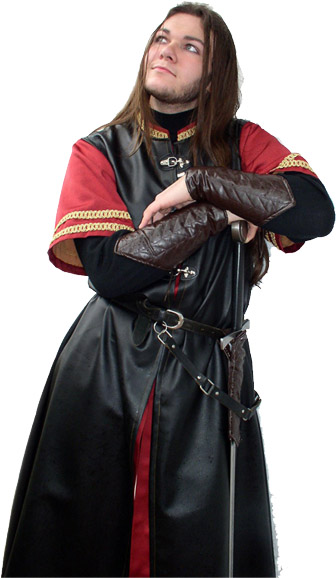

About CossiePlay
CossiePlay is a family-run business, operating in Hulkstown since 2012. We create outstanding custom-made costumes.
Cosplayers can order any kind of costume - from simple Spiderman or elf costumes right up to costumes including advanced features like armour, animatronics, realistic weaponry and working force fields. Depending on the difficulty, costumes take between 1 and 50 weeks and cost between $10 and $10,000.
We buy and sell second-hand costumes (a price list is available) as well.
On the first Saturday of every month we hold a 'CossiePlay Party' at the town hall. Entry is $15 for adults, $10 for ages 6-17 and kids under 6 are free. Each entry includes one non-alcoholic drink and a glow stick. Parties start at 6pm and run until 11pm. There is always a live DJ at the party (who takes requests) and dancing is common (but not required).
What is cosplay?
Cosplay, a portmanteau of the words costume play, is a performance art in which participants called cosplayers wear costumes and fashion accessories to represent a specific character. Cosplayers often interact to create a subculture and a broader use of the term "cosplay" applies to any costumed role-playing in venues apart from the stage.
Any entity that lends itself to dramatic interpretation may be taken up as a subject and it is not unusual to see genders switched. Favorite sources include manga and anime, comic books and cartoons, video games, and live-action films and television series.
The rapid growth in the number of people cosplaying as a hobby since 1990 has made the phenomenon a significant aspect of popular culture in Japan and some other parts of Asia and in the Western world. Cosplay events are common features of fan conventions and there are also dedicated conventions and local and international competitions, as well as social networks, websites and other forms of media centered on cosplay activities.
Reproduced from Wikipedia